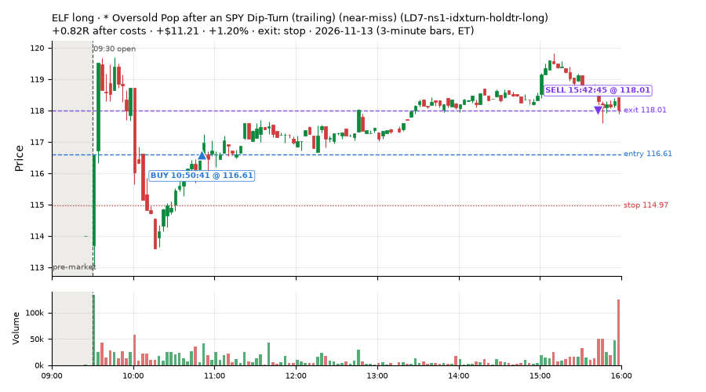
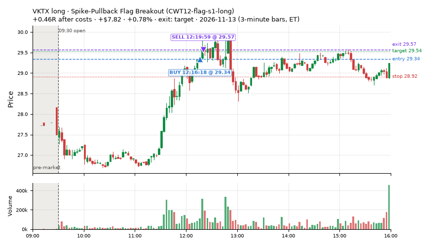
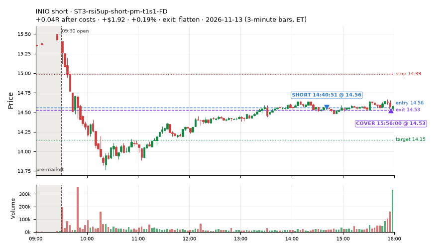
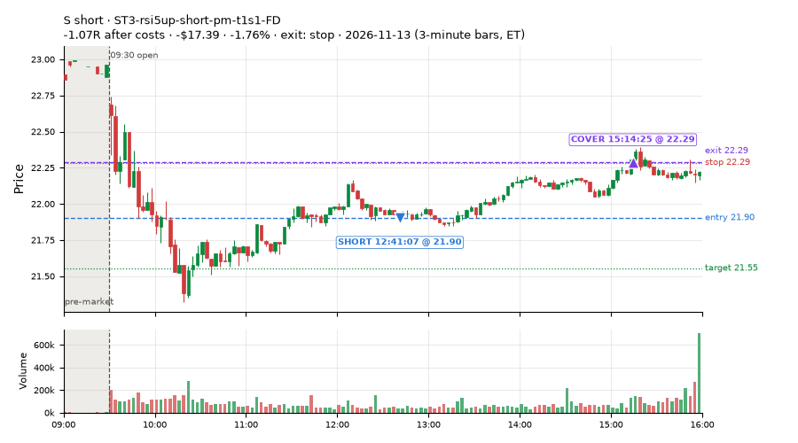
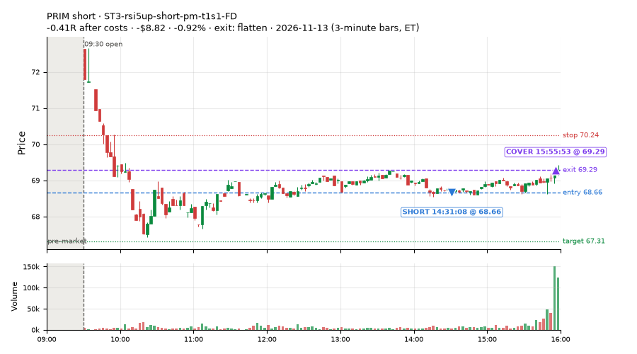
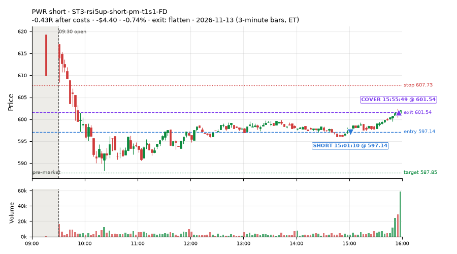
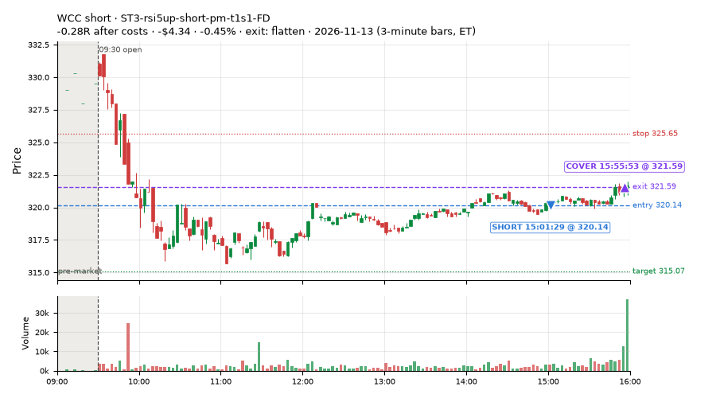
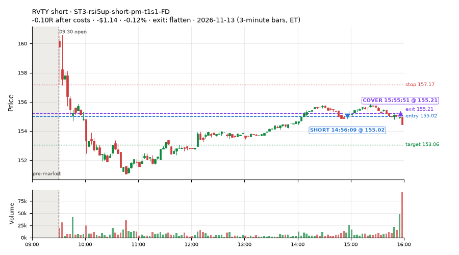

11 trades · win rate 45% · P/L $-13.36
PROBATION: no live setup has passed both locked test periods. 10 owner-directed setups added 2026-10-08 (MarcoFlow top 5 + 5 new), untested live. RW6G1 (RW6 + VWAP band guard) added 2026-10-09, probation.

| Symbol | Setup | Side | In | Out | Entry | Exit | Exit reason | % gained | P/L |
|---|---|---|---|---|---|---|---|---|---|
| ELF | * Oversold Pop after an SPY Dip-Turn (trailing) (near-miss) (LD7-ns1-idxturn-holdtr-long) | long | 10:50 | 15:42 | 116.61 | 118.01 | stop | +1.20% | $11.21 |
| VKTX | Spike-Pullback Flag Breakout (CWT12-flag-s1-long) | long | 12:16 | 12:19 | 29.34 | 29.57 | target | +0.78% | $7.82 |
| INIO | ST3-rsi5up-short-pm-t1s1-FD | short | 14:40 | 15:56 | 14.56 | 14.53 | flatten | +0.19% | $1.92 |
| Symbol | Setup | Side | In | Out | Entry | Exit | Exit reason | % lost | P/L |
|---|---|---|---|---|---|---|---|---|---|
| S | ST3-rsi5up-short-pm-t1s1-FD | short | 12:41 | 15:14 | 21.90 | 22.29 | stop | -1.76% | $-17.39 |
| PRIM | ST3-rsi5up-short-pm-t1s1-FD | short | 14:31 | 15:55 | 68.66 | 69.29 | flatten | -0.92% | $-8.82 |
| PWR | ST3-rsi5up-short-pm-t1s1-FD | short | 15:01 | 15:55 | 597.14 | 601.54 | flatten | -0.74% | $-4.40 |
| WCC | ST3-rsi5up-short-pm-t1s1-FD | short | 15:01 | 15:55 | 320.14 | 321.59 | flatten | -0.45% | $-4.34 |
| RVTY | ST3-rsi5up-short-pm-t1s1-FD | short | 14:56 | 15:55 | 155.02 | 155.21 | flatten | -0.12% | $-1.14 |








Signal to fill: median 3s, 90th percentile 4s (11 trades). Bars close each minute; the order follows the bar close.
Best excursion (MFE): median 0.19R; worst (MAE) median 0.34R. 73% of trades never got +0.25R in our favour; 0 reached +1R and still closed at or below 0.
| Symbol | Setup | Best R | Worst R | Closed R |
|---|---|---|---|---|
| S | ST3-rsi5up-short-pm-t1s1-FD | +0.15 | -1.06 | -1.07 |
| ELF | LD7-ns1-idxturn-holdtr-long | +1.96 | -0.34 | +0.82 |
| ATI | ST3-rsi5up-short-pm-t1s1-FD | +0.53 | -0.24 | +0.08 |
| PRIM | ST3-rsi5up-short-pm-t1s1-FD | +0.04 | -0.36 | -0.41 |
| PWR | ST3-rsi5up-short-pm-t1s1-FD | -0.02 | -0.49 | -0.43 |
| Entry time | Trades | Win | Avg R | P/L |
|---|---|---|---|---|
| 10:30-11:30 | 1 | 100% | +0.82 | $11.21 |
| 11:30-13:00 | 2 | 50% | -0.31 | $-9.57 |
| 13:00-14:00 | 1 | 0% | -0.06 | $-0.90 |
| 14:00-16:00 | 7 | 43% | -0.15 | $-14.10 |
| Setup | Trades | Win | Avg R after costs | Adj R (net of SPY) | Avg R ex-market (all sessions) | P/L |
|---|---|---|---|---|---|---|
| Spike-Pullback Flag Breakout (CWT12-flag-s1-long) | 1.0 | 100% | +0.46 | +0.41 | +0.40 (beta +1.11, n 6) | $7.82 |
| * Oversold Pop after an SPY Dip-Turn (trailing) (near-miss) (LD7-ns1-idxturn-holdtr-long) | 1.0 | 100% | +0.82 | +0.64 | – | $11.21 |
| Big Gainer SMA50 Cross Fade (all day) (RW6-ns2-up3-short-FD) | 1.0 | 0% | -0.06 | +0.02 | – | $-0.90 |
| ST3-rsi5up-short-pm-t1s1-FD | 8.0 | 38% | -0.27 | -0.20 | -0.05 (beta -1.58, n 13) | $-31.49 |
Market direction (SPY, beta 1) accounted for $-9.60 of today's $-13.36; the rest ($-3.76) came from the setups themselves. Avg R net of SPY: -0.05 (incl. a hedge leg's cost; report only).
12 setups live today. Today: 16 signals, 11 taken, 0 lost because another setup held the symbol (0%). Since 2026-11-05 (7 sessions): 211 signals, 68 taken, 1 lost to other setups (0%). Peak open positions today 10 of 200 slots. Earnings blackout removed 546 symbols before scanning.
Simulated playing time (not live): 142 what-if trades of signals not taken, avg -0.09R, 51% winners; of them 1 lost to another setup (avg +0.50R).
Silent: IDX1-qqq100-0955-TQQQ-trail, LD6-spy-dip020atr-breadthturn-spxl-holdtr-long, IDX3-spy075-0955-3x-trail, LD5-st2-breadthup-t05s1-long, NM-RWN4-ns2-spyup05-notfri-short
| Prio | Setup | Today sig / taken | Sessions | Signals / taken / trades | Taken/day | Expected/day | Lost to other setups | Lost to (setup n) | Top skip reasons | SIMULATED: not-taken n / avg R / win | Verdict |
|---|---|---|---|---|---|---|---|---|---|---|---|
| 1 | Index Dip Bounce 1 TQQQ IDX1-qqq100-0955-TQQQ-trail | 0 / 0 | 7 | 0 / 0 / 0 | 0.00 | – | 0 | – | – | 0 / – | silent no signals in 7 session(s); no expected rate on file |
| 2 | * SPY Dip of 0.2 ATR, Breadth Turn (SPXL, trailing) (near-miss) LD6-spy-dip020atr-breadthturn-spxl-holdtr-long | 0 / 0 | 7 | 0 / 0 / 0 | 0.00 | – | 0 | – | – | 0 / – | silent no signals in 7 session(s); no expected rate on file |
| 3 | * Shallow Nasdaq Dip, Breadth Turn (TQQQ) (near-miss) LD2-qqq-dip015-breadthturn-tqqq-t05s1-long | 0 / 0 | 7 | 2 / 2 / 2 | 0.29 | – | 0 | – | – | 0 / – | slow 1.4 entries/week; ~42 weeks to 60 trades |
| 4 | * Oversold Pop after an SPY Dip-Turn (trailing) (near-miss) LD7-ns1-idxturn-holdtr-long | 1 / 1 | 7 | 1 / 1 / 1 | 0.14 | – | 0 | – | – | 0 / – | slow 0.7 entries/week; ~84 weeks to 60 trades |
| 5 | ST5-pdbrkup-short-mid-t05s1-FD ST5-pdbrkup-short-mid-t05s1-FD | 0 / 0 | 7 | 14 / 4 / 4 | 0.57 | 0.78 | 0 | – | not shortable / shorts off 8, spread / quote / size 2 | 10 / -0.51R / 40% | slow 2.9 entries/week; ~21 weeks to 60 trades |
| 6 | Early NS3 Short While QQQ Up (near-miss) NM-RWR3-ns3-qqqup-early-short | 0 / 0 | 7 | 20 / 7 / 7 | 1.00 | – | 0 | – | spread / quote / size 7, not shortable / shorts off 5, other 1 | 13 / +0.31R / 69% | slow 5.0 entries/week; ~12 weeks to 60 trades |
| 7 | Gap-Down Reclaim Fade, Afternoon (near-miss) NM-PM-gapdn-above-pdh-rvol-short | 0 / 0 | 7 | 1 / 0 / 0 | 0.00 | – | 0 | – | spread / quote / size 1 | 1 / +1.28R / 100% | slow no entries yet |
| 8 | ST3-rsi5up-short-pm-t1s1-FD ST3-rsi5up-short-pm-t1s1-FD | 10 / 8 | 7 | 22 / 13 / 13 | 1.86 | 1.35 | 0 | – | not shortable / shorts off 7, spread / quote / size 1, other 1 | 9 / -0.47R / 22% | slow 9.3 entries/week; ~6 weeks to 60 trades |
| 9 | Panic Flush Reversal (deep, 3x volume) CWT05-flush-m075-v3-long | 0 / 0 | 7 | 19 / 10 / 10 | 1.43 | – | 0 | – | other 6, spread / quote / size 1, price through stop/target 1 | 8 / -0.13R / 62% | slow 7.1 entries/week; ~8 weeks to 60 trades |
| 10 | Spike-Pullback Flag Breakout CWT12-flag-s1-long | 1 / 1 | 7 | 10 / 6 / 6 | 0.86 | – | 0 | – | other 3, broker rejected 1 | 4 / +0.20R / 75% | slow 4.3 entries/week; ~14 weeks to 60 trades |
| 11 | Backside VWAP-Test Short CWT04-backside-vwaptest-a15-short | 2 / 0 | 7 | 7 / 0 / 0 | 0.00 | – | 0 | – | not shortable / shorts off 5, spread / quote / size 1, other 1 | 7 / -0.28R / 29% | slow no entries yet |
| 12 | Big Gainer SMA50 Cross Fade (all day) RW6-ns2-up3-short-FD | 2 / 1 | 1 | 2 / 1 / 1 | 1.00 | 7.12 | 0 | – | not shortable / shorts off 1 | 1 / +0.24R / 100% | watch 1.00 entries/day vs ~7.12 expected |
Every trade is attached as a CSV you can open and edit in Excel or Google Sheets. Live page: https://misiti15.github.io/MCF/live/